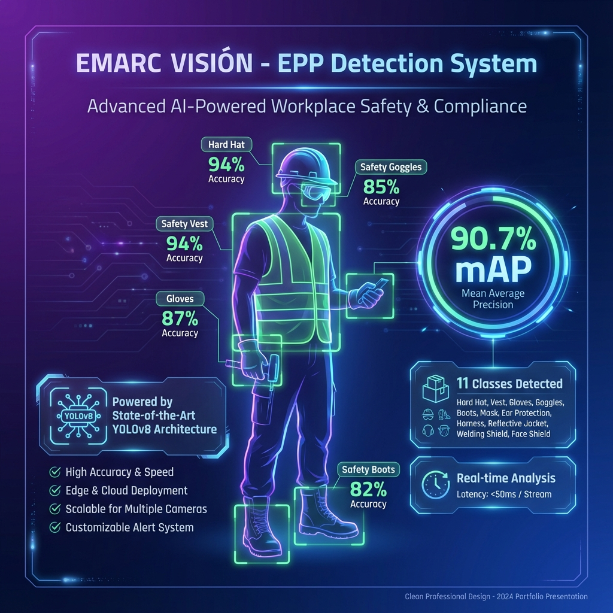

Innovadores en Acción 2026
PROPUESTA · LAS BAMBAS
GAIATECH M1.0 — Plataforma IA para Casos 13 (LRAC) y 12 (Relaves)
Integración de 4 activos en producción alineados con el VP SHE: ConstEdge (acceso + EPP), Gen+ Vision PDK (monitoreo de obra), GAIATECH VIGÍA (vibraciones edge) y Aecodito Minero (captura conversacional de RACS / Tarjetas Verdes en WhatsApp).
4 activos en prod
5 normas alineadas
1 día demo funcional
YOLOv8
FPGA
Jetson Orin
n8n + WhatsApp
Postgres pgvector
Aplicabilidad
Caso 13 LRAC + Caso 12 Relaves. Cumple DS 024-2016-EM, DS 023-2017-EM, DS 034-2023-EM Cap. XII (arts. 418-423), Res. 122-2024-OS/CD, GISTM 2020, ICMM CCM.
